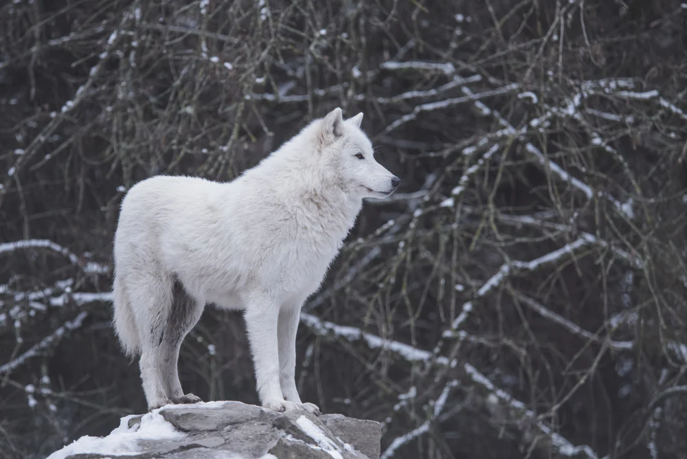

A beautiful photo of an Arctic-wolf
There are three species and close to 40 subspecies of wolf
-
Scientific Name: Canis lupus arctos
-
Average Weight: 45 to 70 kilogram (100 to 155 pounds)
-
Average Length: 1 to 1.8 meters
-
Average Lifespan: 20 years
-
Habitat: Arctic tundra